Rumah Tinggal dan Butik
Rumah Tinggal dan Butik ini berlokasi di Jalan Sersan Bajuri, Bandung dan ditempati oleh sebuah keluarga
dengan 2 anak remaja. Sang ibu memiliki bisnis butik jas pria yang lokasinya dalam 1 site dengan rumah tinggal dan sang ayah memiliki
hobi berkebun. Desain ini mengambil sebuah tema 'Rest area' dimana keluarga menjadikan rumah ini checkpoint untuk tempat
beristirahat dan bisa melanjutkan aktivitas sehari-hari. Dalam site ini, disediakan tempat parkir untuk 3 mobil pengunjung
untuk butik / tamu rumah. Penggunaan Ramp yang berbelok-belok adalah respon terhadap site yang berkontur sehinga
bisa memberikan pengalaman berjalan kaki sembari menikmati view sekitar tapak. Area servis ruamh dipisahkan sehingga tidak
mengganggu aktivitas yang terjadi di dalam zona rumah yang penuh aktivitas. Di depan butik, ada sebuah taman yang cukup
besar dan akses masuk pengunjung butik, diharuskan untuk melewati taman ini, sehingga menjadi visual tambahan yang bisa dinikmati
para pengunjung butik. Pengerjaan tugas ini diharuskan sepenuhnya gambar tangan manual.


 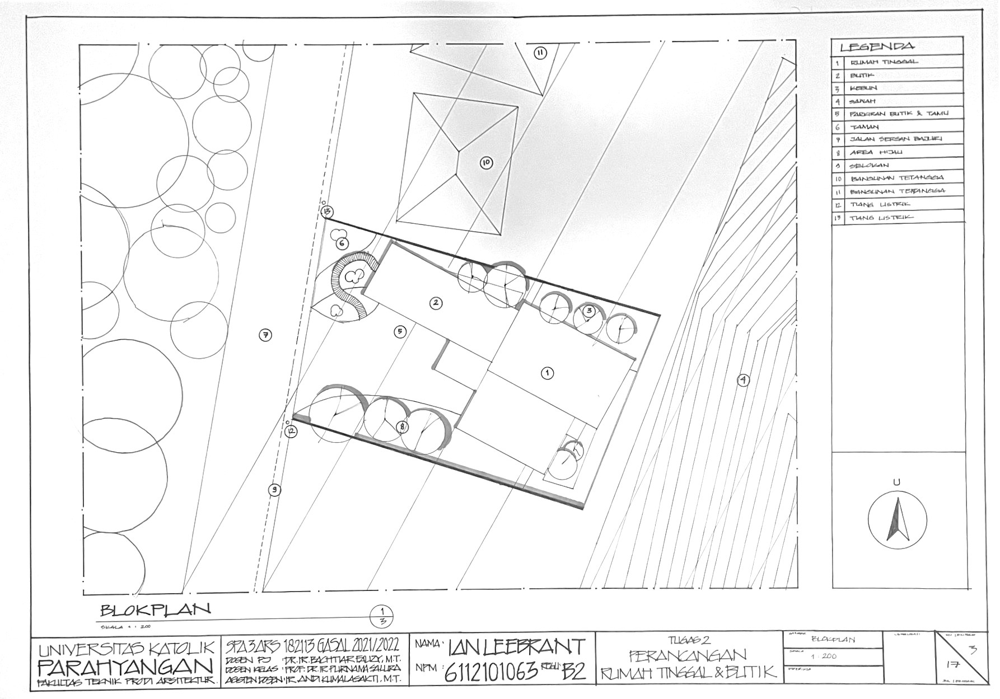
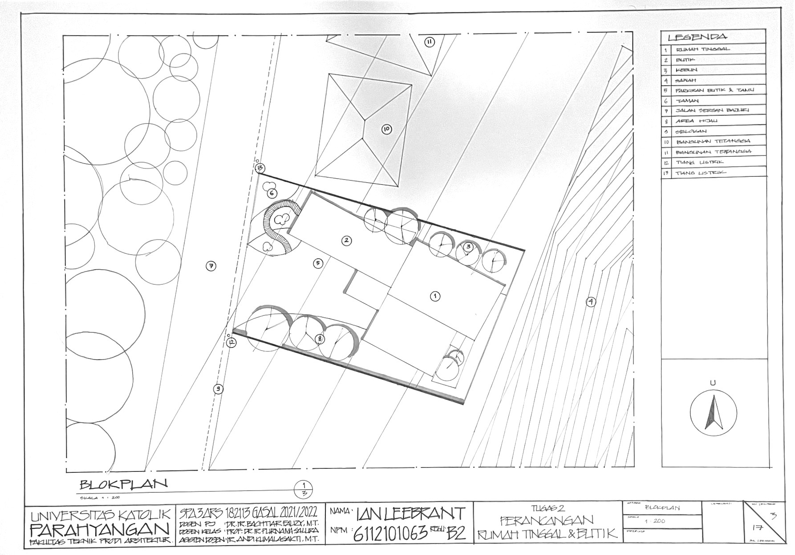


 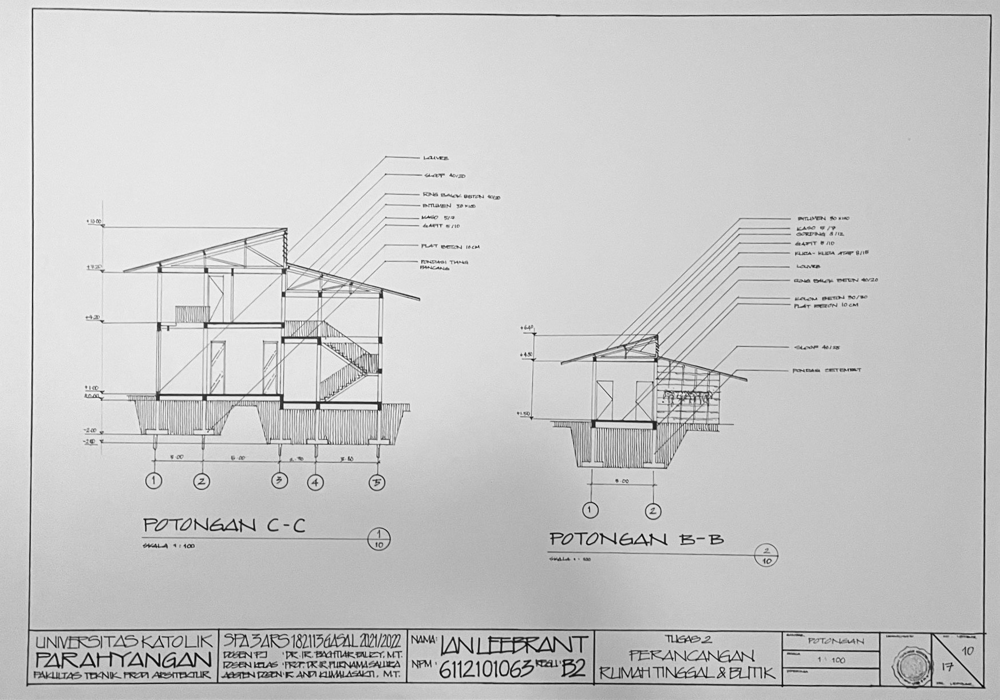
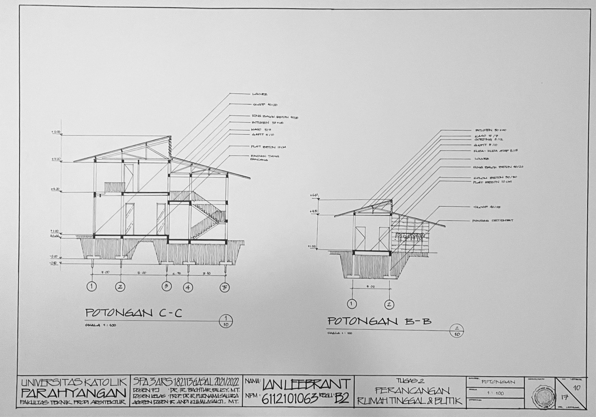

 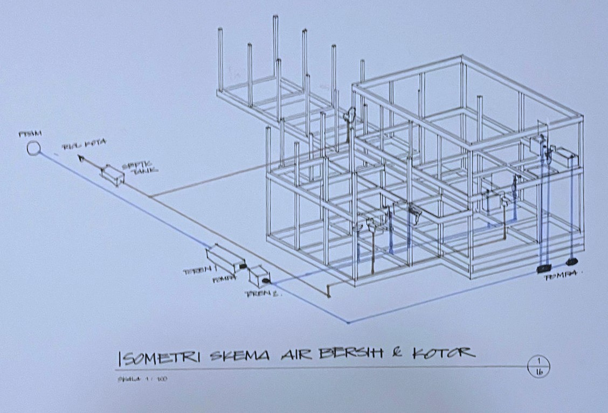
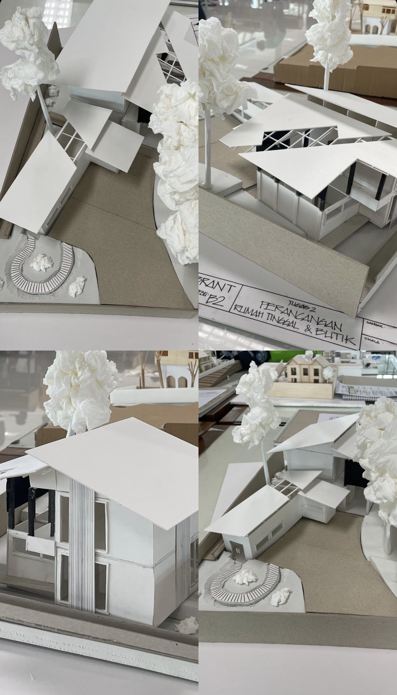
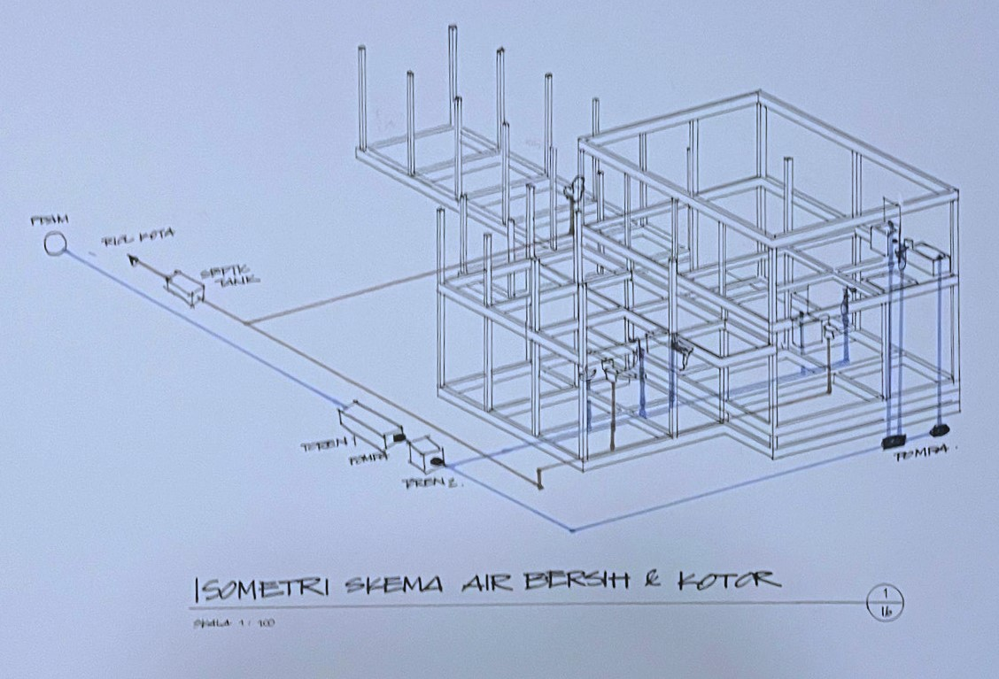
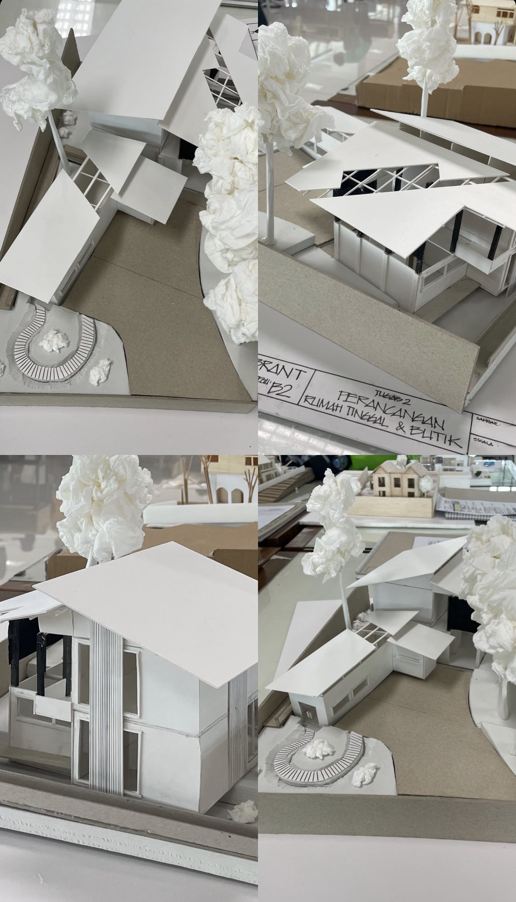
 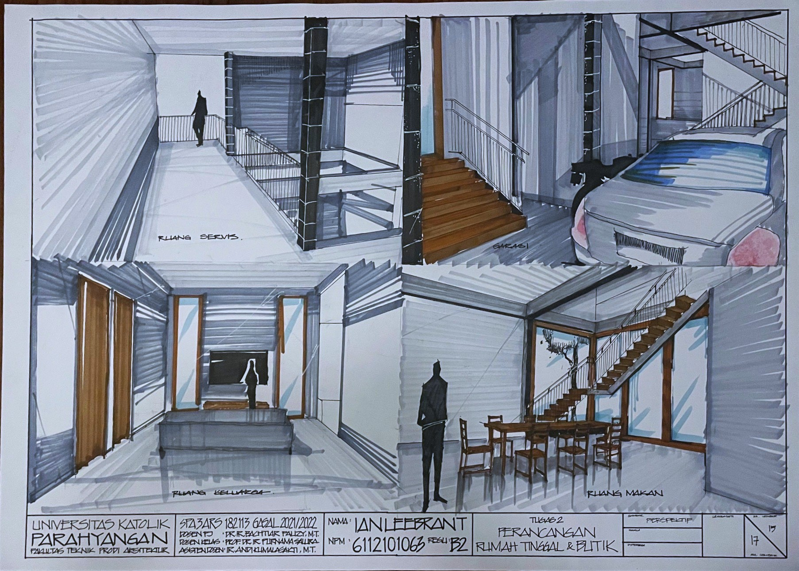
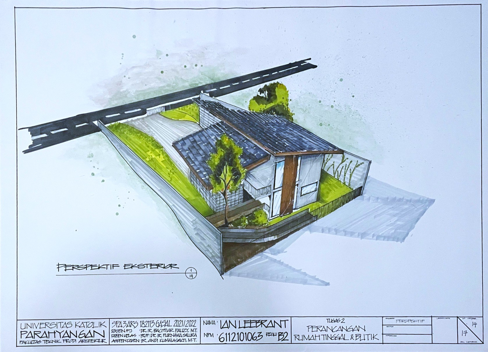
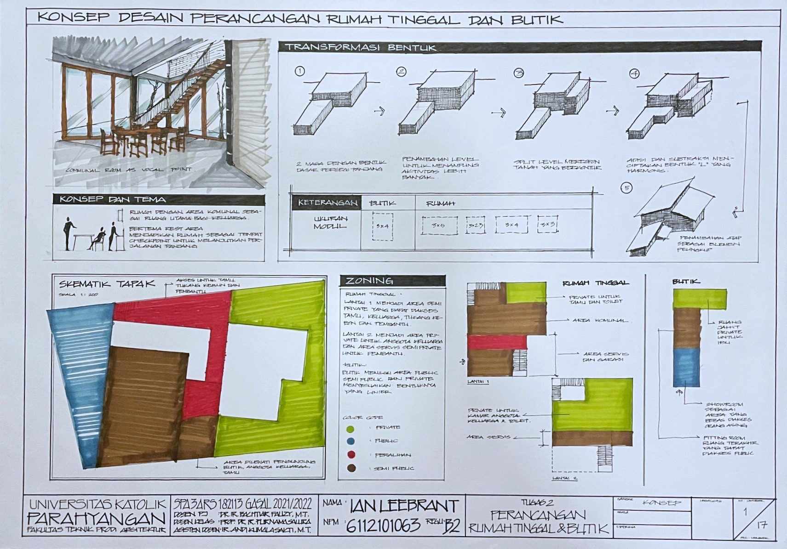
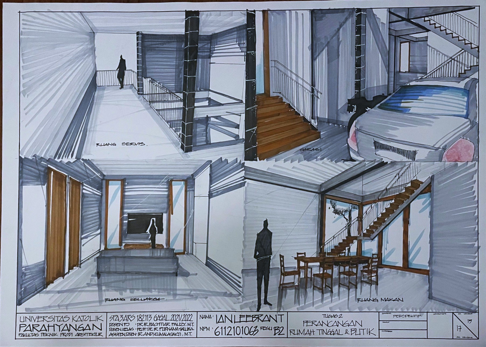
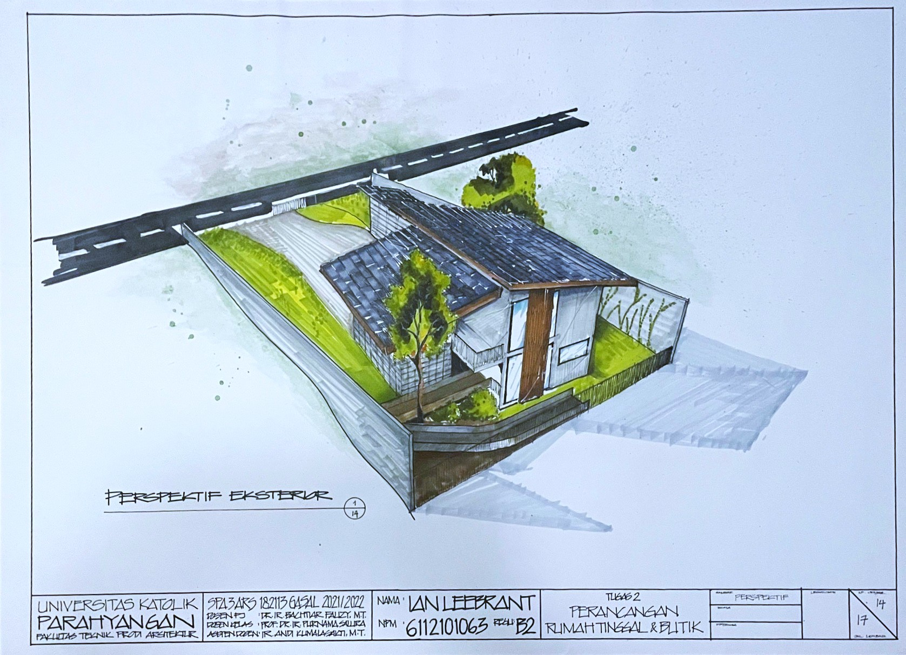
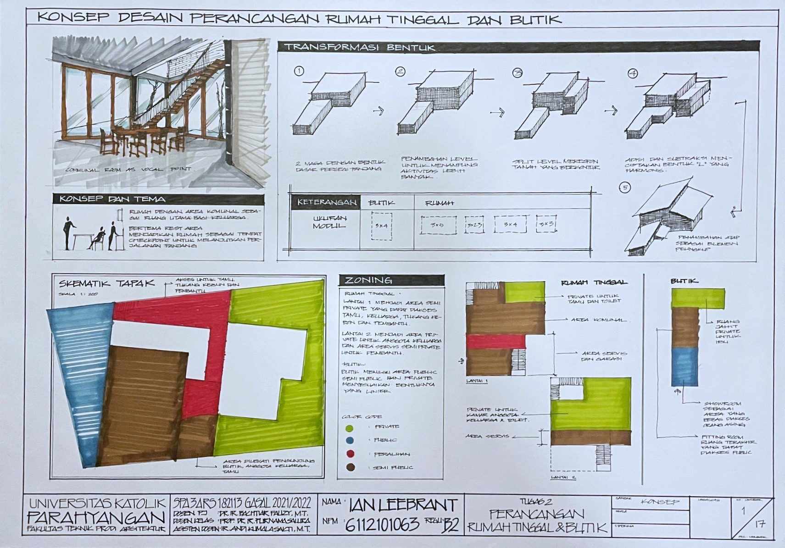